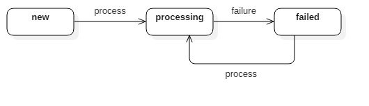

Models¶
List of database models (MySQL & MongoDb) for storeroom app.
-
class
storeroom.models.ImportRecord(*args, **values)¶ Mongo model to store data of any schema. This model act as a buffer storage for bulk uploads where records can be stored and later picked-up by process that uses them.
Each record belongs to a context which is associated with a process. Each process looks for records of its context and processes it.
After processing, the record is removed from this collection. This is the responsibility of the process.
Warning
The schema of
identifiersanddatacan be anything. Please be careful setting these fields and make sure process that processes them can understand it.Authors: Gagandeep Singh
-
save(update_attr=True, *args, **kwargs)¶ Save method for this model.
Authors: Gagandeep Singh
-
-
class
storeroom.models.ResponseQueue(*args, **values)¶ Mongodb collection to store all submitted responses for all types of forms. All responses received are queued in this collection immediately without any pre-processing. These are then later picked-up by a process that processes them and migrate into corresponding models as per the
context.State chart diagram for organization status:
Points:
statusstate chart is custom implemented similar to ‘django-fsm’. However, this is not error-proof sincestatusfield is not PROTECTED. Please change state carefully and always use transition methods only.
Note
Responses which are successfully processed are removed from this collection.
Warning
DO NOT update
statusdirectly. Always use transition methods. Also, make sure you call save() method are calling transition method.Authors: Gagandeep Singh
-
delete(**write_concern)¶ Pre-Delete method for this model.
Authors: Gagandeep Singh
-
save(*args, **kwargs)¶ Save method for this model.
Authors: Gagandeep Singh
-
trans_failed(error_title, error_traceback)¶ Transition method to change state from PROCESSING to FAILED.
Authors: Gagandeep Singh
-
trans_process()¶ Transition method to change state from NEW to PROCESSING.
Authors: Gagandeep Singh